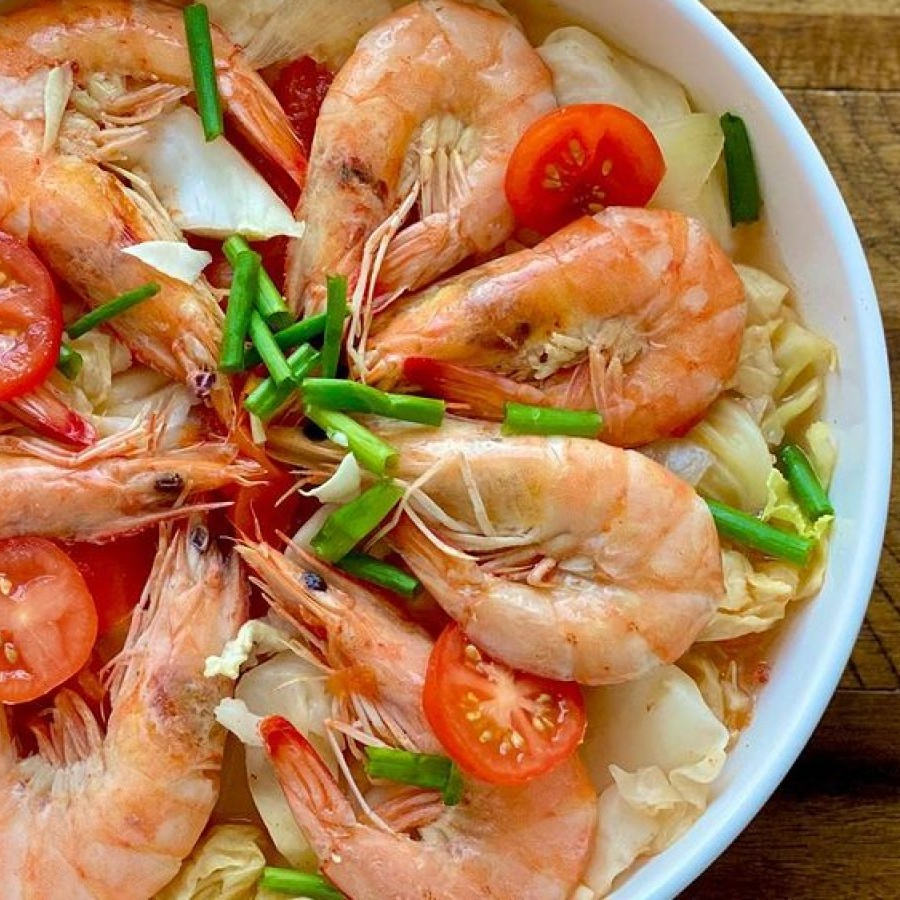

Sinigang na Hipon Recipe

Description
Shrimp is the major component of the Filipino sour soup known as sinigang na hipon. Other veggies in this meal include daikon radish, snake beans, okra, and eggplant. The greatest time to serve this dish is in a chilly climate. The best way to enjoy it is hot with some white rice.
Ingredients
- 6 cups Water
- 1 lb Shrimps (with skin and head), seasoned with a little salt
- 3 Plum Tomatoes, quartered
- 2 Onions, chopped
- 1 White Radish, sliced
- 2 mild Green Chile Peppers
- 6 Okra
- 1–1/2 cups freshly squeezed Tamarind juice or to taste*
- 2 Tablespoons Fish sauce or use Salt instead, to taste
- 1 (10 oz) pack fresh Spinach or 1–2 bunches of Kangkong
Steps
- Bring the water to a simmer in a big pan (almost boiling).
- Cook the sliced radishes until they are tender-crisp after adding the tomatoes, onions, and tomatoes (half-cooked).
- For an additional 3 minutes, add the green chili peppers, okra, and tamarind juice.
- Add the shrimp and taste-test adding salt or fish sauce.
- Cook for a further 4-5 minutes, or until the vegetables are all soft and the shrimp are done.
- At this stage, check the seasoning and adjust as desired by adding additional fish sauce, souring agent, or even water.
- Cut the heat off.
- The spinach or kangkong is added after being stirred in, covered, and cooked for a few minutes. The boiling soup should cook it quickly due to the steam.
- Pour into dishes and eat right away!
- Serve with rice.